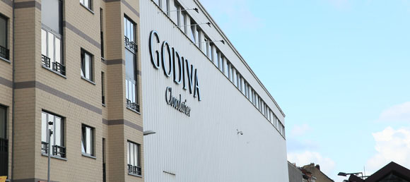
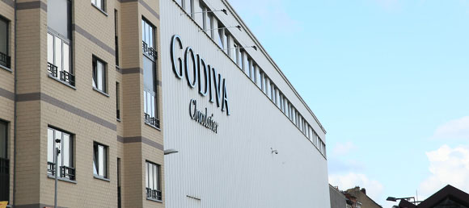

Charming Landscapes
GODIVA’s unique heritage and humble roots can be experienced in its home of Brussels
Since its earnest beginnings in 1926 when Pierre Draps transformed his homemade pralines into the luxury brand we know today, GODIVA has always had a high reputation, with over 450 boutiques and cafes in more than 80 countries around the world. Appointed in 1968 by the Royal Court of Belgium as its official supplier, the GODIVA Grand Sablon store in Brussels embodies history and nostalgia. It offers an authentic, charming, premium experience for fans and tourists alike, with hand-dipped strawberries to handmade liqueur pralines and collectible box gift sets.
GODIVA lovers, including VIP celebrity guests such as Asian starlets Angelababy and Pace Wu flock to its factory in Brussels, to witness the meticulous attention and innovative craftsmanship behind each piece of chocolate. With sophisticated skills and devoted passion, it’s no surprise that the average career length at the renowned GODIVA Factory is a remarkable 15 years.


 
